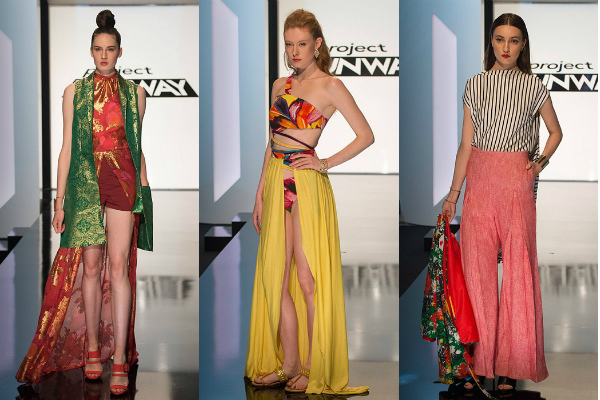
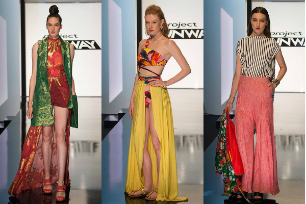

Today, the sewing machine is a vital piece of technology. Without its use the production of clothing would not thrive as it does now. The sewing machine has allowed for couture fashion to trickle down and be made into ready to wear fashion; also referred to as “fast fashion”. It has also been a major part of aiding modern fashion careers, such as the show Project Runway in which designers are challenged on their ability to manipulate the sewing machine and create edgy pieces. Although Howe was one of the first to patent the actual sewing machine, Singer has surpassed Howe’s machinery and is currently one of the most common at home sewing machines in use. The machine now contains different stitch settings, also certain machines contain digital screens to choose different functions such as stitching size, stitching pattern and even 13 different buttonhole options. There is also the convenience of hand sewing machines in which the user can take it on the go, or store for easy and quick access. Despite all of the technological advances the sewing machine has made, the future for the machine has improvements no one saw coming.